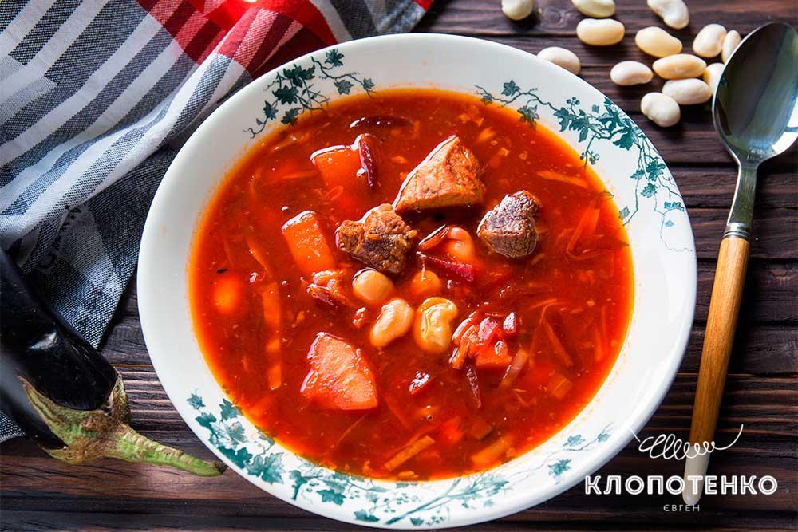

Борщ – це культурне надбання України, наша гордість та кулінарний символ нашої країни. Бути байдужим до цього густого наваристого супу просто неможливо
інгредієнти
| інгредієнти | Кількість |
|---|---|
| Вода | 2 л. |
| Картопля | 2-4 шт. |
| Буряк | 2 шт. |
| свинина або яловичина на кістці | 400 г. |
| морква | 1 шт. |
| Цибуля | 3 шт. |
| капуста білокачанна свіжа | 300 г. |
| томатна паста | 2 ст. л. |
| соняшникова олія | 4-5 ст. л. |
| лимонна кислота | дрібка |
| сіль, лавровий лист, зелень | за смаком |
покрокова інструкція
- Спершу варимо бульйон.
- У каструлю наливаємо 1,5-2 літра води.
- Додаємо м’ясо й ставимо на середній вогонь.
- Перед закипанням знімаємо піну.
- Щойно бульйон закипить, накриваємо кришкою і варимо на повільному вогні годину-півтори.
- Тим часом готуємо засмажку.
- Чистимо буряк, моркву та цибулю.
- Буряк натираємо на крупній тертці, а моркву – на середній. Цибулю нарізаємо кубиками.
- На середньому вогні в сковороді розігріваємо олію, висипаємо туди цибулю та моркву, смажимо 5 хвилин.
- Потім додаємо буряк (його можна посипати лимонною кислотою або збризнути соком свіжого лимона – так борщ буде по-справжньому червоним).
- Смажимо овочі ще 5 хвилин, додаємо томатну пасту, перемішуємо й смажимо все ще 5-7 хвилин.
- А тепер варимо сам борщ.
- З бульйону виймаємо м’ясо і, поки воно холоне, кидаємо в бульйон нашатковану капусту.
- Через 5-10 хвилин додаємо нарізану соломкою картоплю.
- Відокремлюємо м’ясо від кістки й нарізаємо кубиками.
- Повертаємо м’ясо в борщ, солимо його і додаємо засмажку.
- Перемішуємо борщ, кладемо лавровий лист і дрібно посічену зелень, накриваємо кришкою та варимо все ще 5-7 хвилин.
- Подаємо борщ зі сметаною і зеленню.